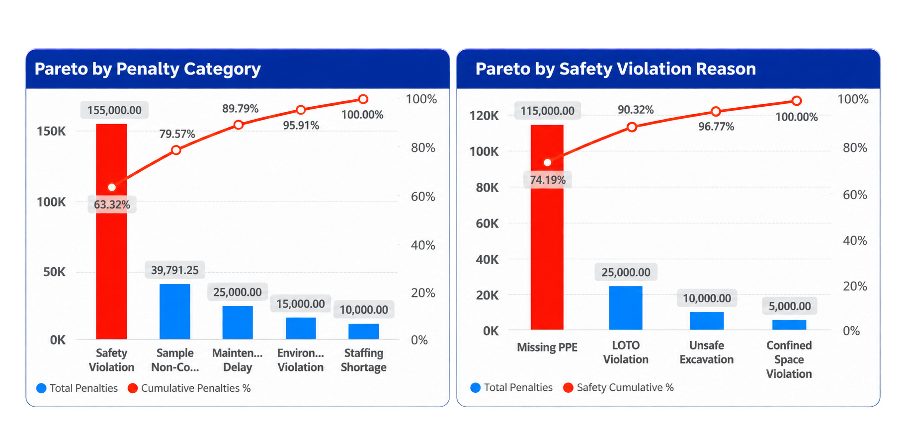

Case Study Overview
This case study uses Power BI and the Pareto principle to identify which types of operations and maintenance contract penalties have the greatest financial impact, then drills down into the leading safety-related causes.
Data note: The dataset is simulated for demonstration and portfolio purposes; findings are illustrative, not actual company penalty records.
Pareto Charts

The first chart ranks penalty categories; the second investigates the drivers within safety violations.
Key Performance Indicators
Analytical Approach
- Group penalty amounts by category and sort them from highest to lowest.
- Calculate each category's contribution and the cumulative percentage.
- Identify the largest financial exposure: safety violations.
- Drill into safety violation reasons using a second Pareto chart.
- Translate the findings into targeted preventive and corrective actions.
Key Findings
Safety violations account for SAR 155,000 (63.32%) of the SAR 244,791.25 total. Combined with sample non-compliance, the cumulative contribution reaches 79.57%.
Within safety penalties, Missing PPE contributes SAR 115,000 (74.19%). Adding LOTO violations increases the cumulative share to 90.32%.
These concentrations indicate where investigation and improvement efforts could be prioritized. The 80/20 rule is a guiding heuristic, not an exact threshold that every dataset must follow.
Recommended Actions
- PPE: Review availability, suitability, use, inspections, and workforce training.
- LOTO: Verify isolation procedures, authorization, competency, and field compliance.
- CAPA: Investigate recurring violations, assign owners, and verify corrective-action effectiveness.
- KPIs: Track safety penalty value, repeat violations, PPE compliance, and CAPA closure rates over time.
Tools & Techniques
Power BI | Excel | Power Query | DAX | Pareto Analysis | Root-Cause Prioritization | KPI Development
Business Value
The analysis demonstrates how a financial penalty register can support operational decision-making by focusing attention on high-impact categories and specific, actionable safety issues.